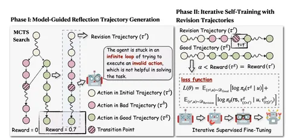
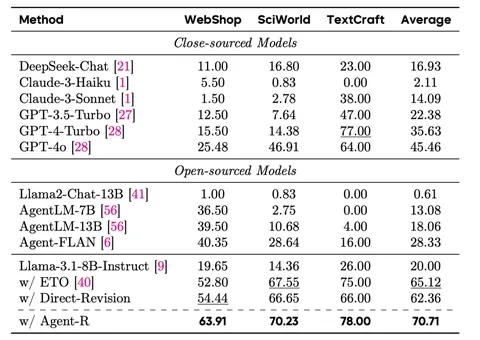
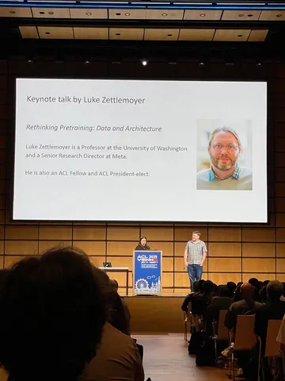
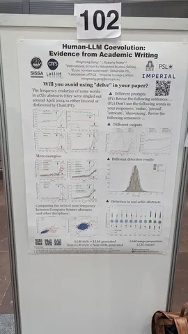
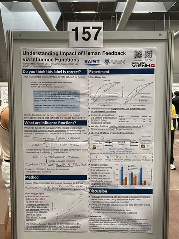
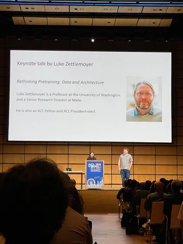
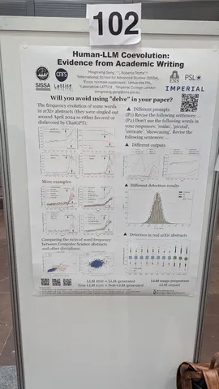
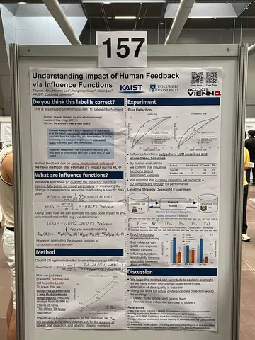

Как заставить агентов делать работу над ошибками
Сегодня разбираем статью об обучении агентов. Проблема такая: реворд-модели оценивают только результат в конце траектории, а если агент сделал ошибку и исправил её, нельзя сказать, когда это произошло. Если бы у нас была такая возможность, то мы могли бы раньше направить обучаемую LLM по нужному пути. Есть способы фиксировать ошибки и делать реворд по шагам, но это дорого и сложно в реализации.
Авторы предлагают метод Agent-R, суть которого заключается в обучении агентов не на правильных траекториях, а на тех, где есть явная ошибка и её исправление. Такие траектории получаются через Monte Carlo Tree Search. Берутся пары из одной стартовой точки (инструкции): одна траектория успешная, а другая — нет. На инференсе момент расхождения должна определить сама модель, а при обучении к началу провальной траектории добавляется фраза-рефлексия, которую генерирует агент, понимая, что он ошибся (CoT). Следом «приклеивается» хвост удачной траектории и на всём этом делают SFT. Такой подход, соединеняющий рефлексии и «хороший» хвост, снижает риск склейки не связанных траекторий.
В статье выводят следующие типы траекторий:
Initial Trajectory — общий начальный префикс.
Bad Trajectory — субоптимальные действия c низкой наградой.
Good Trajectory — оптимальные действия с высокой наградой.
Revision Trajectory — траектория, в которой агент совершил ошибку и исправил её.
Для получения Revision Trajectory можно брать плохие траектории, дожидаться их финала и переписывать. Однако так не получится обучить агента ловить ошибки на лету. Вместо этого авторы заставляют модель самостоятельно анализировать траектории и пытаться определить первый шаг, где совершена ошибка. На этом месте траектория обрезается, вставляется этап рефлексии и следом — правильная траектория.
Monte Carlo Tree Search позволяет собрать много разных траекторий с одним началом. Это удобно, так как можно сравнивать хорошие и плохие продолжения. Финальный реворд используется не для обучения напрямую, а для классификации траекторий по качеству — то есть, по сути, чтобы понять, что пойдёт в SFT-датасет. У реворда есть два порога: один отделяет плохие траектории от хороших, а другой выбирает уже из хороших лучшие.
Авторы отмечают, что обучаться только на Revision Trajectory нельзя — это мешает агенту определять правильные траектории. Поэтому изначально в датасет добавляют много Good Trajectory и постепенно в процессе SFT повышают порог реворда оптимальных решений, чтобы в конце оставались только лучшие из них. Кроме того, в датасет подмешивают обычные языковые данные, что помогает агенту не забывать, чему он обучался ранее.
Эксперименты проводили на Llama-3.1-8B, которую обучили на собранных Revision Trajectory. Результаты можно посмотреть в таблице, приложенной к посту. Авторы заявляют, что исправленные траектории оказываются даже лучше идеальных.
Разбор подготовила❣ Карина Романова
Подписывайтесь на канал Карины «что-то на DL-ском» — там познавательно и можно ставить реакт кота в парике.
Душный NLP
Сегодня разбираем статью об обучении агентов. Проблема такая: реворд-модели оценивают только результат в конце траектории, а если агент сделал ошибку и исправил её, нельзя сказать, когда это произошло. Если бы у нас была такая возможность, то мы могли бы раньше направить обучаемую LLM по нужному пути. Есть способы фиксировать ошибки и делать реворд по шагам, но это дорого и сложно в реализации.
Авторы предлагают метод Agent-R, суть которого заключается в обучении агентов не на правильных траекториях, а на тех, где есть явная ошибка и её исправление. Такие траектории получаются через Monte Carlo Tree Search. Берутся пары из одной стартовой точки (инструкции): одна траектория успешная, а другая — нет. На инференсе момент расхождения должна определить сама модель, а при обучении к началу провальной траектории добавляется фраза-рефлексия, которую генерирует агент, понимая, что он ошибся (CoT). Следом «приклеивается» хвост удачной траектории и на всём этом делают SFT. Такой подход, соединеняющий рефлексии и «хороший» хвост, снижает риск склейки не связанных траекторий.
В статье выводят следующие типы траекторий:
Initial Trajectory — общий начальный префикс.
Bad Trajectory — субоптимальные действия c низкой наградой.
Good Trajectory — оптимальные действия с высокой наградой.
Revision Trajectory — траектория, в которой агент совершил ошибку и исправил её.
Для получения Revision Trajectory можно брать плохие траектории, дожидаться их финала и переписывать. Однако так не получится обучить агента ловить ошибки на лету. Вместо этого авторы заставляют модель самостоятельно анализировать траектории и пытаться определить первый шаг, где совершена ошибка. На этом месте траектория обрезается, вставляется этап рефлексии и следом — правильная траектория.
Monte Carlo Tree Search позволяет собрать много разных траекторий с одним началом. Это удобно, так как можно сравнивать хорошие и плохие продолжения. Финальный реворд используется не для обучения напрямую, а для классификации траекторий по качеству — то есть, по сути, чтобы понять, что пойдёт в SFT-датасет. У реворда есть два порога: один отделяет плохие траектории от хороших, а другой выбирает уже из хороших лучшие.
Авторы отмечают, что обучаться только на Revision Trajectory нельзя — это мешает агенту определять правильные траектории. Поэтому изначально в датасет добавляют много Good Trajectory и постепенно в процессе SFT повышают порог реворда оптимальных решений, чтобы в конце оставались только лучшие из них. Кроме того, в датасет подмешивают обычные языковые данные, что помогает агенту не забывать, чему он обучался ранее.
Эксперименты проводили на Llama-3.1-8B, которую обучили на собранных Revision Trajectory. Результаты можно посмотреть в таблице, приложенной к посту. Авторы заявляют, что исправленные траектории оказываются даже лучше идеальных.
Разбор подготовила
Подписывайтесь на канал Карины «что-то на DL-ском» — там познавательно и можно ставить реакт кота в парике.
Душный NLP

3 941 просмотров · 34 реакций
Открыть в Telegram · Открыть пост на сайте


 
